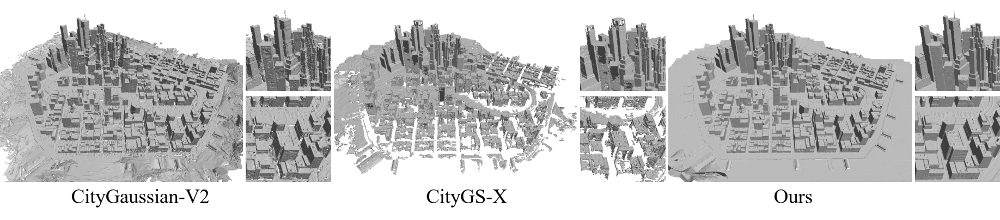

CityGaussian-V2

Multi-view 3D surface reconstruction is a longstanding challenge in computer vision. Although recent large-scale reconstruction methods based on 3D Gaussian Splatting (3DGS) achieve impressive novel-view synthesis, producing high-quality surfaces over large scenes remains difficult, due to complex geometry, long optimization, and limited memory. In this paper, we propose a novel yet simple partitioning method to efficiently and faithfully reconstruct large-scale scene surfaces. Our key insight lies in a scene partitioning method based on viewpoint orientation. This partitioning approach ensures that views with similar orientations are jointly involved for more accurate depth estimations, leading to precise surface reconstructions and balanced computation on multiple GPUs in parallel. In addition, we propose a strategy to detect and repair missing regions in the initial point cloud caused by sparse viewpoints or insufficient textures, thereby further improving the geometric quality. Extensive experiments on the GauU-Scene, MatrixCity, and UrbanScene3D datasets demonstrate that our method outperforms the state-of-the-art approaches in surface reconstruction for large-scale scenes.
@inproceedings{han2026vop-gs,
title = {City-Level 3D Surface Reconstruction with Viewpoint Orientation Partitioning and Scene Completion},
author = {Han, Liang and Zhang, Wenyuan and Zhou, Junsheng and Liu, Yu-Shen and Han, Zhizhong},
booktitle = {European Conference on Computer Vision},
year = {2026}
}